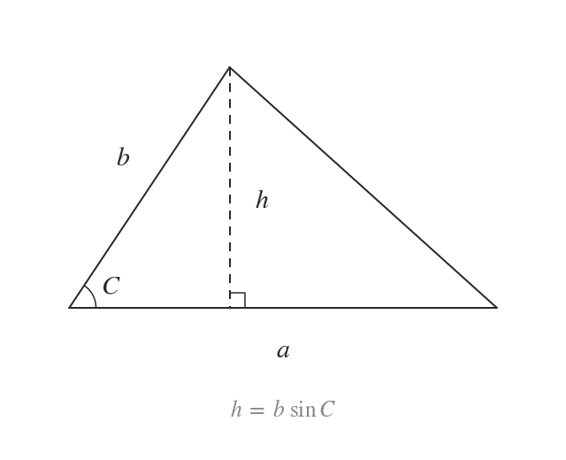
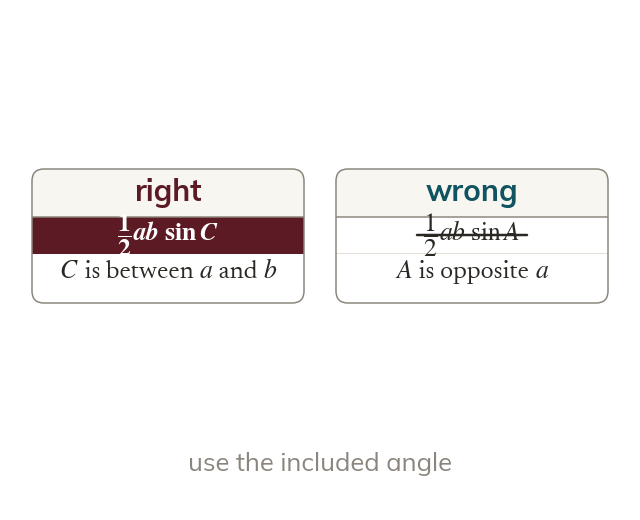
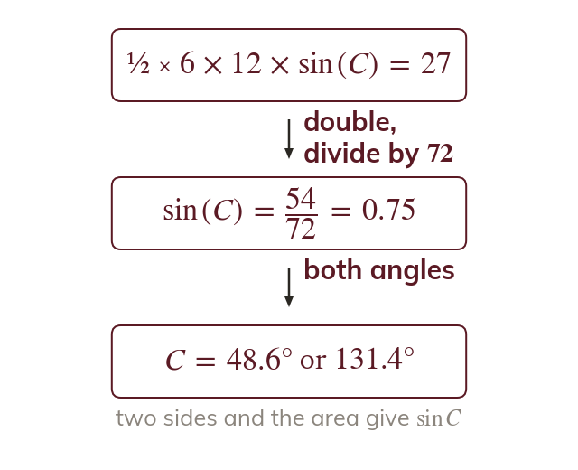
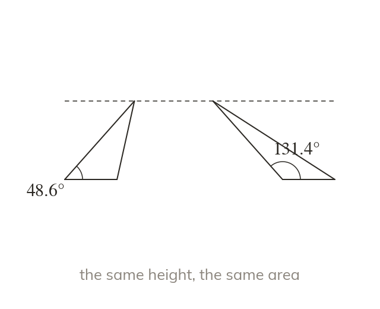

Two sides and the angle between
The area of any triangle is where C is the angle between sides a and The height is so this is ½ × base × height.
The formula finds the area of any triangle from two sides and the angle between them, and it works backwards to an unknown side or angle. Next lesson combines it with the sine and cosine rules to solve problems.
Work down the page at your own pace. Write every answer in your book first, then click to check it.
Read each card, then follow the worked examples one step at a time.

The area of any triangle is where C is the angle between sides a and The height is so this is ½ × base × height.

The angle in is the one where sides a and meet. An angle opposite one of the sides gives the wrong area.
Pick an answer. If it's wrong, the feedback tells you which mistake it was.
Write the blanks in your book first, then tap each one to check.
Read each card, then follow the worked examples one step at a time.

Substitute the area and the known sides, then solve for what is unknown. To find the angle, rearrange to .

Because an acute angle and an obtuse angle give the same area. Both are answers unless the question rules one out.
Pick an answer. If it's wrong, the feedback tells you which mistake it was.
Write the blanks in your book first, then tap each one to check.
Finished? Next lesson: 9.4 Solving Triangle Problems.
For each skill, tap the one that is true for you today. Your Revise pages start with anything you mark Not yet.
Your ratings are saved on this device only.
Log in, then search for a code to practise that skill.